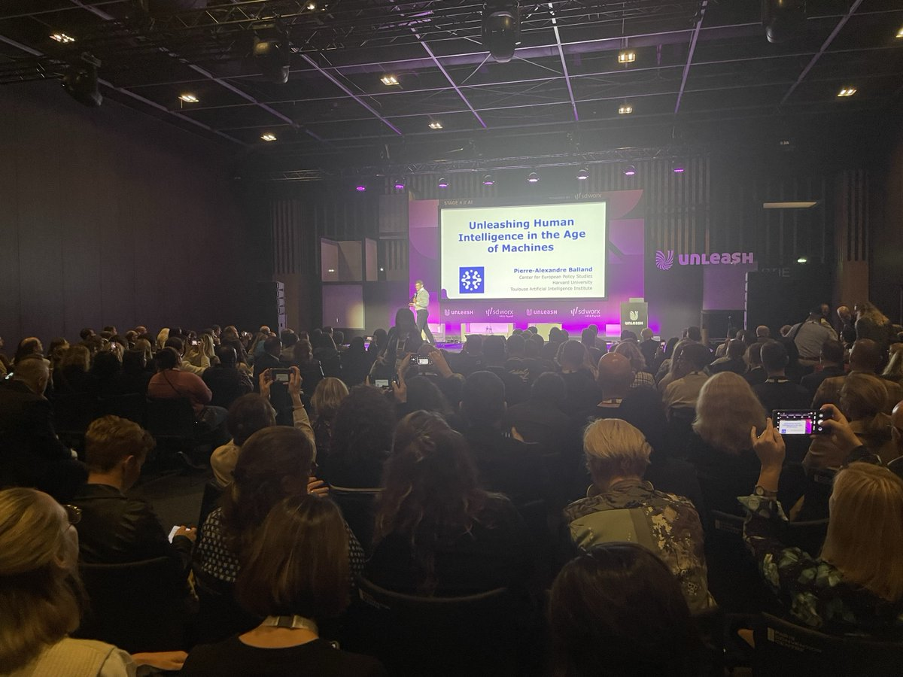

Last month, I had the opportunity to present on human intelligence in the age of machines at UNLEASH World, the world’s leading HR Conference and Exhibition. Here are some of the key takeaways from my talk: (1) AI offers a golden opportunity to create meaningful jobs and free workers to focus on what they do best, (2) realizing this potential requires fostering AI literacy, reshaping workflows, and balancing AI-driven productivity with employee well-being and (3) AI can empower human collective intelligence, enabling us to coordinate, innovate, and solve problems at scale. A big thank you to Marc Coleman, Gary A. Bolles, and the fantastic UNLEASH team for organizing such an impactful event. Stay tuned, and feel free to visit the AI World to watch the world transform with Artificial Intelligence.

This outstanding AI conference brought together different academic, business, and policy perspectives. I talked about the position of Europe in the AI race. Whilst it’s true that the US and China dominate the global AI marketplace, Europe definitely shouldn’t be counted out yet. Europe’s current position should not be mistaken for a lack of talent or a lack of technological potential. Several European hubs based in cities across the continent do indeed harbour a rich pool of AI talent, scientific excellence, and commitment to responsible AI development, which can forge a path towards trustworthy AI, rooted in humanitarian and democratic values. This talk is based on an ESIR/CEPS paper with Andrea Renda.
I finally made to the stage of what is know as the first, best and most fun economic festival of the Nordic countries. Here I engaged with the audience of what in means to be human in a world increasingly shared with machines and core facts about the geography of AI.
WIRE is the main European policy forum for innovation and regional development. The conference provides a platform for policy makers, public authorities, knowledge centers and enterprises to discuss research and innovation (R&I) practices, challenges and opportunities throughout the European regions, with a direct view on the current and future EU funding programs. In 2022 WIRE was hosted by Université Paris-Saclay under the French Presidency of the Council of the European Union.
Keynote at the Annual Congress of the European Regional Science Association (ERSA) on ‘Cities in a Post-Corona World’. Cities are a global magnet to talent, capital, and knowledge. The success of cities has been so spectacular that it has propelled a worrying spatial divide within almost every country. Cities are also the most resilient social systems that humans have ever created. They have dwarfed the longevity of countries and corporations, and have bounced back from pandemics, to natural disasters, to economic crises. Is this time different? Will the coronavirus crisis put a halt to the home-run of cities? Or will the societal transitions triggered by this crisis (particularly in the digital sector) be another leg to the success of cities in the 21st century? In this talk, Pierre-Alexandre Balland will build on research on complex systems and economic geography to offer an outlook for cities in a post-corona world (August 2020)
No region can rely on past successes, rather constant transformation and re-invention is necessary for a region to keep developing. Many regional policies, such as smart specialization, aim to support regions in this process of re-invention. Yet, the operationalization of regional development policies has been rather limited because a coherent set of analytical tools to guide the policy directives remains elusive. In this webinar Pierre-Alexandre Balland proposes a policy framework around the concepts of relatedness and knowledge complexity. Based on a recent study, he shows that diversifying into more complex technologies is attractive but difficult for European Union regions to accomplish. Regions can overcome this diversification dilemma by developing new complex technologies that build on local related capabilities. These findings are then used to construct a policy framework for smart specialization that highlights the potential risks and rewards for regions of adopting competing diversification strategies.
The virtual age is the age of cities. As information and communication technologies develop, people and firms agglomerate and innovation disproportionally concentrates in a few places in the world. How can we explain this paradox? In this inspiring talk, Pierre-Alexandre Balland reveals that cities are the knowledge incubators of modern societies, and why you need proximity and face-to-face interactions to generate the next big idea.